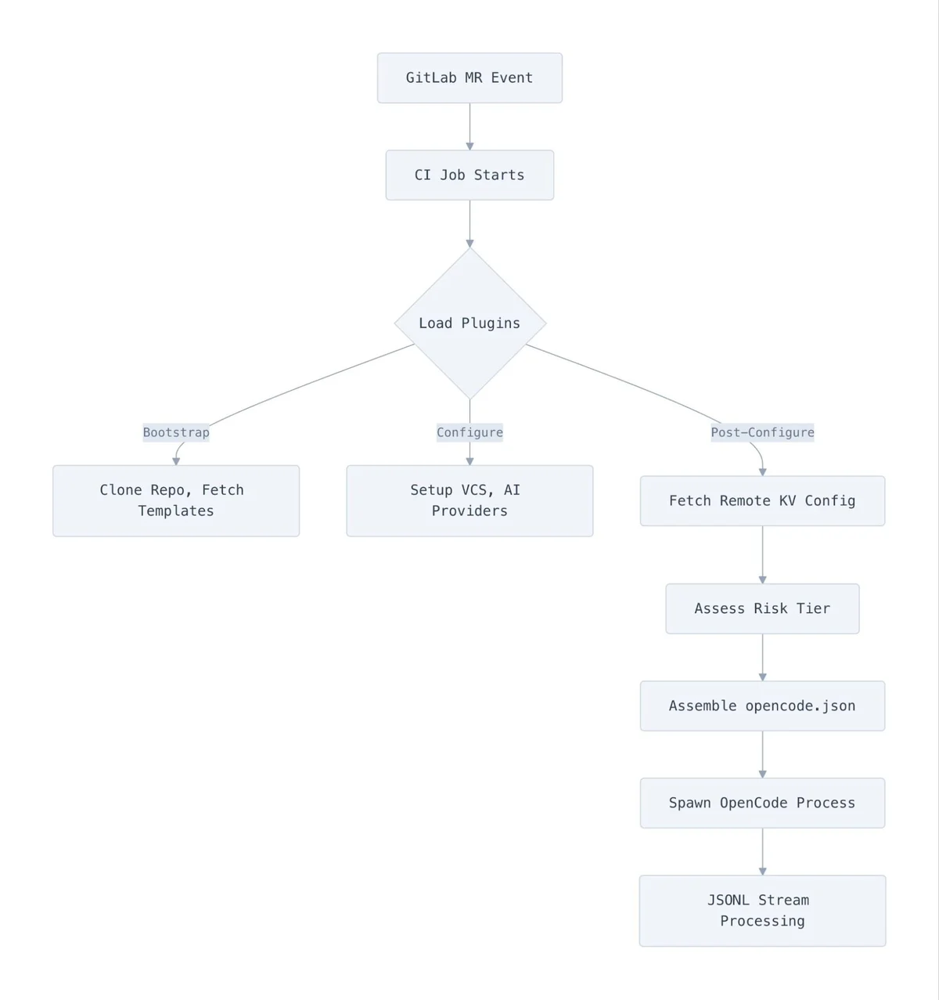
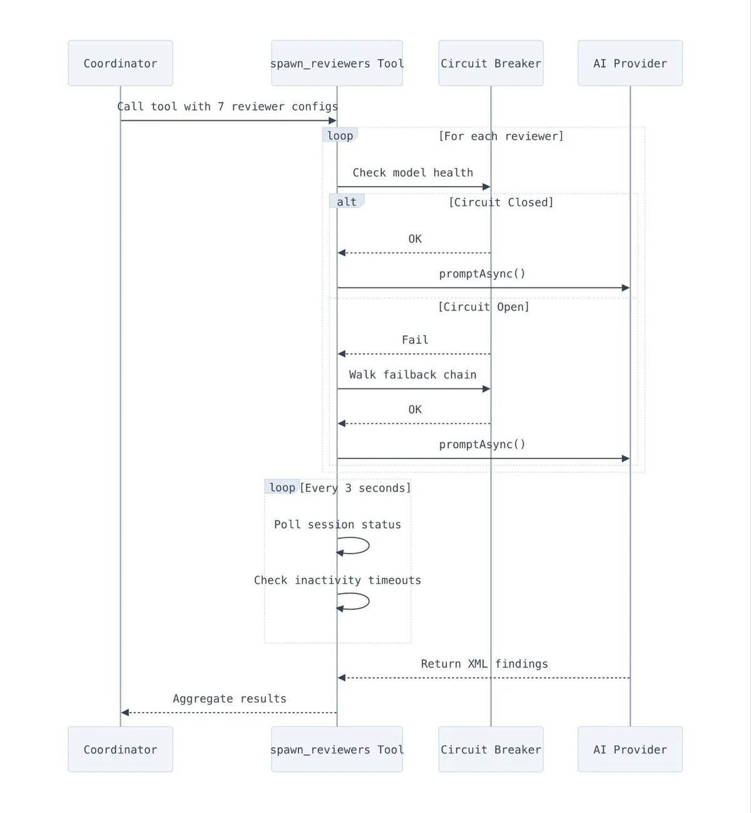
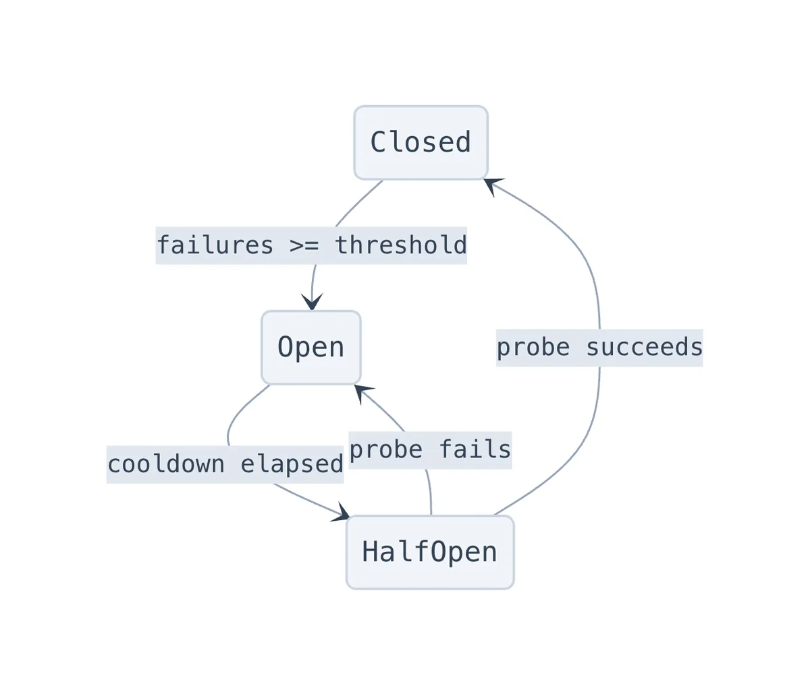
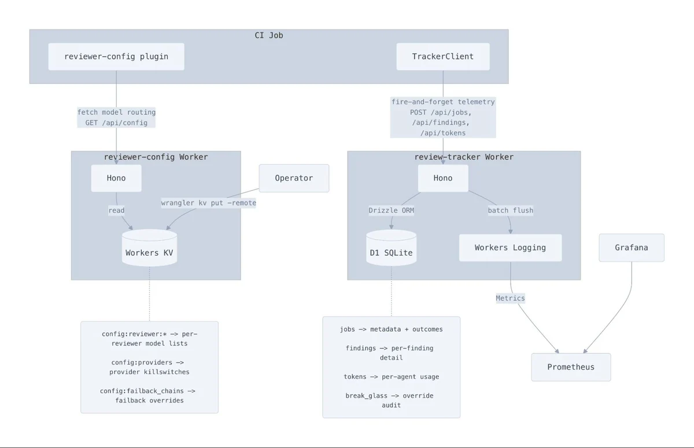
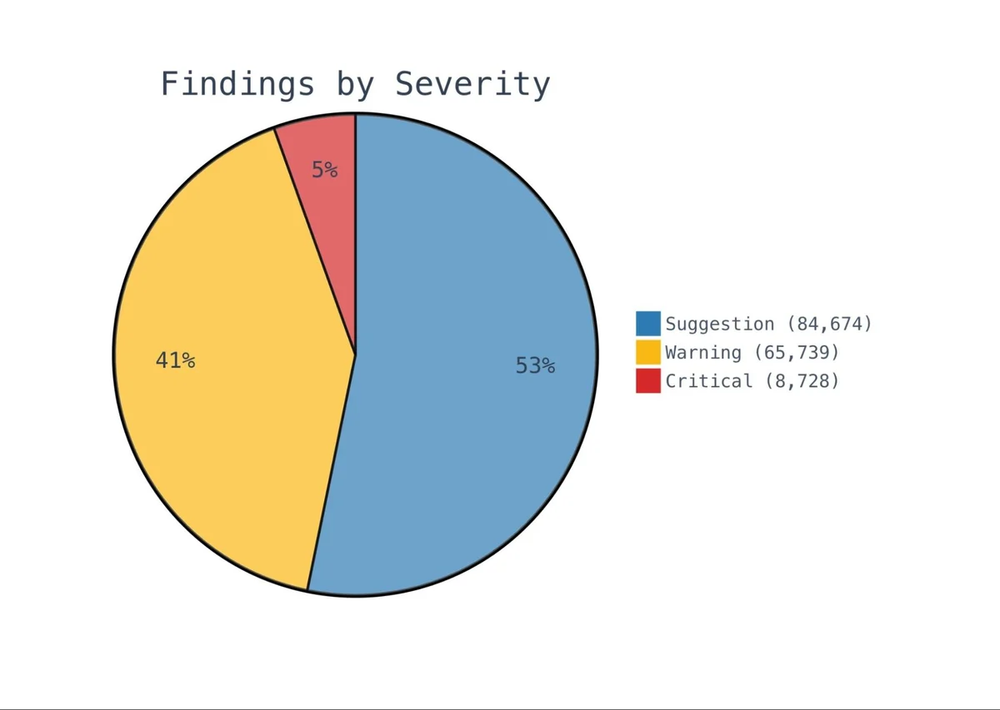
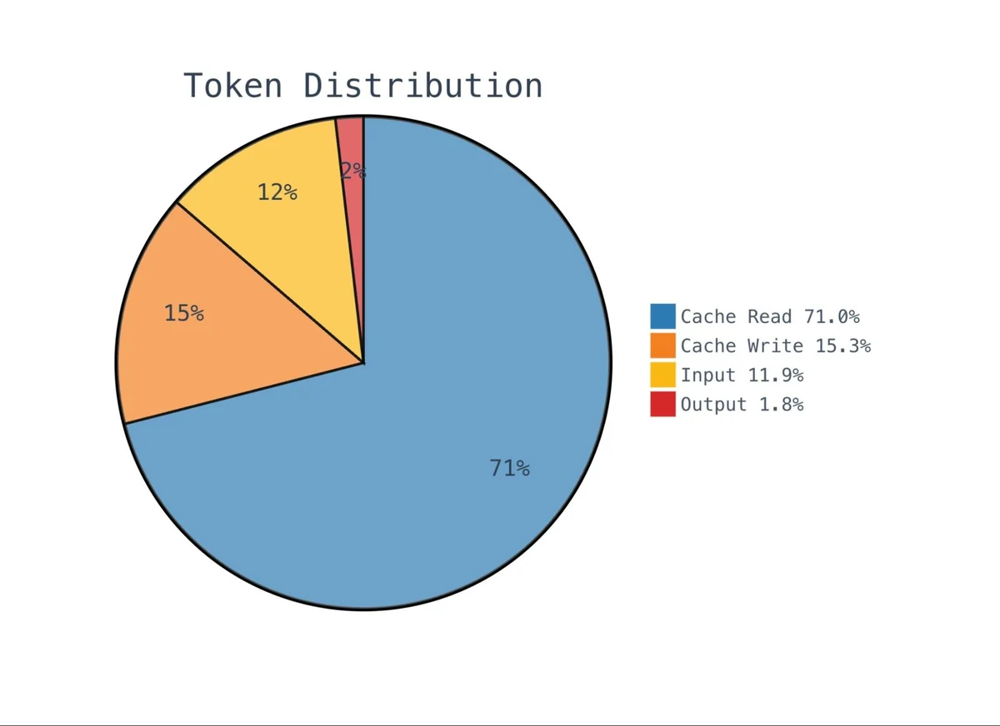
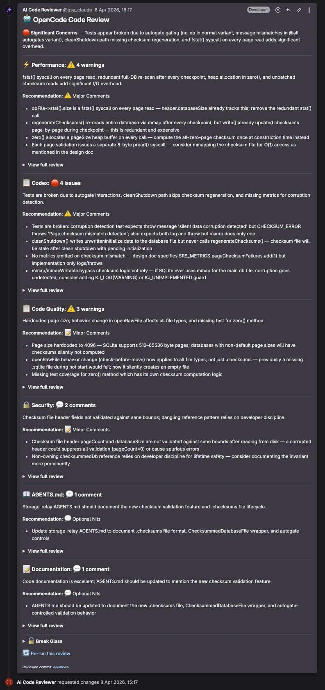

总结
Cloudflare 的解法不是“一个大模型 + 一个大 prompt”，而是：最多 7 个专业 reviewer + 1 个 coordinator。
- 单体 review agent 不够灵活，naive prompt 会产生大量噪音、幻觉和“考虑加错误处理”式废话。
- 用 OpenCode 做底座，围绕它建 CI 原生编排系统。
- 插件架构：GitLab、AI Gateway、Codex 合规、Braintrust、AGENTS.md、reviewer-config、telemetry。
- Coordinator 用最强模型；专业 reviewer 用标准模型；文档/发布类用轻量模型。
- 安全 reviewer 明确写“什么不要报”，这是 prompt engineering 的关键。
- 共享上下文文件避免 7 个 reviewer 各复制一份 MR 上下文。
- 风险分级：trivial 2 个 agent、lite 4 个、full 7+ 个。
- 30 天 159,103 个 finding，平均每 review 1.2 个，刻意偏向信号而非噪音。
- 局限：架构意识、跨系统影响、微妙并发 bug、成本随 diff 规模增长。
原文逐段对照翻译
翻译说明：以下按原文顺序翻译架构、编排、成本、结果和局限；代码片段与长表格保留关键部分，完整实现见原文。
问题：审查是瓶颈
Code review is a fantastic mechanism for catching bugs and sharing knowledge, but it is also one of the most reliable ways to bottleneck an engineering team. Across our internal projects, the median wait time for a first review was often measured in hours.
代码审查是发现 bug、共享知识的好机制，但也是最可靠的工程瓶颈之一。Cloudflare 内部项目首次 review 的中位等待经常是几小时。
We tried a few AI code review tools, but they didn't offer enough flexibility and customisation for an organisation the size of Cloudflare. Then we tried grabbing a git diff, shoving it into a half-baked prompt, and asking an LLM to find bugs. The results were exactly as noisy as you might expect.
试过市面上的 AI review 工具，但对 Cloudflare 这种规模不够灵活。然后走了“把 git diff 塞进半成品 prompt，让 LLM 找 bug”的路，结果如预期：大量噪音、幻觉语法错误、对已有错误处理的函数说“考虑加错误处理”。
Instead of building a monolithic code review agent from scratch, we decided to build a CI-native orchestration system around OpenCode. Today, up to seven specialised reviewers cover security, performance, code quality, documentation, release management, and compliance with our internal Engineering Codex. A coordinator agent deduplicates findings, judges severity, and posts one structured review comment.
我们没有从头造单体 review agent，而是围绕 OpenCode 建 CI 原生编排系统。今天最多 7 个专业 reviewer 覆盖安全、性能、代码质量、文档、发布管理、内部 Engineering Codex 合规；一个 coordinator 去重、判断严重性、发一条结构化评论。
插件架构
We built the system on a composable plugin architecture where the entry point delegates all configuration to plugins that compose together to define how a review runs. Each plugin implements a ReviewPlugin interface with three lifecycle phases: Bootstrap runs concurrently and is non-fatal; Configure runs sequentially and is fatal; postConfigure handles asynchronous work like fetching remote model overrides.
系统采用可组合插件架构：入口把所有配置委托给插件，插件组合决定 review 怎么跑。每个插件实现 `ReviewPlugin` 的三个生命周期：Bootstrap 并发、非致命；Configure 顺序、致命；postConfigure 处理异步工作，如拉远程模型覆盖。
The ConfigureContext gives plugins a controlled surface: register agents, add AI providers, set environment variables, inject prompt sections, and alter fine-grained agent permissions. No plugin has direct access to the final configuration object. The core assembler merges everything into opencode.json.
`ConfigureContext` 给插件受控表面：注册 agent、加 AI provider、设环境变量、注入 prompt 段、改细粒度权限。没有插件能直接改最终配置；核心 assembler 合并成 `opencode.json`。
The plugin roster includes GitLab VCS, Cloudflare AI Gateway, Codex compliance, Braintrust tracing, AGENTS.md verification, reviewer-config remote model overrides, and telemetry. Because of this isolation, the GitLab plugin doesn't read Cloudflare AI Gateway configurations, and the Cloudflare plugin doesn't know anything about GitLab API tokens.
插件包括 GitLab VCS、Cloudflare AI Gateway、Codex 合规、Braintrust tracing、AGENTS.md 校验、reviewer-config 远程模型覆盖、telemetry。隔离后，GitLab 插件不读 AI Gateway 配置，Cloudflare 插件不知道 GitLab token。

两层编排：Coordinator 与 OpenCode
We spawn OpenCode as a child process using Bun.spawn. We pass the coordinator prompt via stdin rather than as a command-line argument, because a massive merge request description full of logs can hit the Linux kernel's ARG_MAX limit. The process runs with --format json, so all output arrives as JSONL events on stdout.
我们用 `Bun.spawn` 把 OpenCode 作为子进程启动。Coordinator prompt 通过 stdin 传入，而不是命令行参数，因为大 MR 描述加日志会撞 Linux `ARG_MAX`。进程用 `--format json`，所有输出以 JSONL 事件到 stdout。
Inside the OpenCode process, a runtime plugin provides the spawn_reviewers tool. When the coordinator LLM decides it is time to review the code, it calls this tool, which launches sub-reviewer sessions through OpenCode's SDK. Each sub-reviewer runs in its own session with its own agent prompt, and returns findings as structured XML.
OpenCode 进程内，一个 runtime 插件提供 `spawn_reviewers` 工具。Coordinator LLM 决定开始 review 时调用它，通过 SDK 启动子 reviewer session。每个 sub-reviewer 有自己的 session 和 prompt，最后用结构化 XML 返回 findings。
为什么用 JSONL
JSON requires everything to be closed out to be a valid blob. If your application exits early before it writes a valid JSON blob, you often lose the debug logs exactly when you need them most. JSONL is a text format where every line is a valid, self-contained JSON object. You read a line, parse it, and move on.
JSON 需要完整闭合才是有效 blob；进程提前退出时，最需要 debug 的日志反而丢了。JSONL 每行一个独立、有效的 JSON 对象：读一行、解析一行、继续。
We process the coordinator's output in real time, buffering and flushing every 100 lines or 50ms. We pull token usage from step_finish events, trigger retries on error events, and watch for output truncation: if a step_finish arrives with reason "length", we know the model hit max_tokens and retry.
我们实时处理 coordinator 输出，每 100 行或 50ms flush 一次；从 `step_finish` 提取 token 用量；error 事件触发 retry；看到 `reason: "length"` 就知道输出被 max_tokens 截断，自动重试。
Large models can spend a while thinking, which looks like a hung job. We added a heartbeat log that prints "Model is thinking... (Ns since last output)" every 30 seconds, which almost entirely eliminated users cancelling jobs that were actually working.
大模型思考很久，看起来像 job 卡住。我们加了每 30 秒打印“Model is thinking... (Ns since last output)”的心跳日志，几乎消除了用户误取消。
专业 agent 而不是一个大 prompt
Each agent has a tightly scoped prompt telling it exactly what to look for and, more importantly, what to ignore. The security reviewer only flags issues that are exploitable or concretely dangerous: injection, auth bypass, hardcoded secrets, insecure crypto, missing input validation at trust boundaries.
每个 agent 的 prompt 都很窄，明确“看什么”，更重要的是“不看什么”。安全 reviewer 只报可利用或具体危险的问题：注入、auth bypass、硬编码密钥、不安全加密、信任边界上缺失输入校验。
What NOT to flag: theoretical risks requiring unlikely preconditions; defense-in-depth suggestions when primary defenses are adequate; issues in unchanged code that this MR doesn't affect; "consider using library X" suggestions. Telling an LLM what not to do is where the actual prompt engineering value resides.
不要报：需要不现实前提的理论风险；主防御足够时的 defense-in-depth 建议；本 MR 不影响的不变代码；“考虑使用库 X”式建议。告诉 LLM 不要做什么，才是 prompt engineering 的真正价值。
Every reviewer produces findings in structured XML with severity: critical (outage or exploitable), warning (measurable regression or concrete risk), or suggestion. This ensures downstream behavior is driven by structured data, not parsed advisory text.
每个 reviewer 用结构化 XML 输出 severity：critical（outage 或可利用）、warning（可测量回归或具体风险）、suggestion。这样下游行为由结构化数据驱动，而不是解析建议文本。
模型分层
Top-tier models (Claude Opus 4.7 and GPT-5.4) are reserved exclusively for the Review Coordinator. It reads the output of seven other models, deduplicates findings, filters false positives, and makes the final judgment call. Standard-tier models (Claude Sonnet 4.6 and GPT-5.3 Codex) handle code quality, security, and performance. Kimi K2.5 handles lightweight text-heavy tasks.
Top-tier（Claude Opus 4.7、GPT-5.4）只给 Review Coordinator：它要读 7 个模型输出、去重、过滤误报、做最终判断。Standard-tier（Sonnet 4.6、GPT-5.3 Codex）负责代码质量、安全、性能。Kimi K2.5 负责文档、发布、AGENTS.md 等轻量文本任务。
Prompt injection 防护与共享上下文
Agent prompts are built at runtime by concatenating the agent-specific markdown with a shared REVIEWER_SHARED.md. The coordinator's input is assembled from MR metadata, comments, previous findings, diff paths, and custom instructions into structured XML. We strip boundary tags from user-controlled content to prevent prompt injection.
Agent prompt 在运行时拼接：agent 专属 Markdown + 共享 `REVIEWER_SHARED.md`。Coordinator 输入由 MR 元数据、评论、历史 findings、diff 路径、自定义指令拼成结构化 XML。我们剥掉用户内容里的边界标签，防止 prompt injection。
The system doesn't embed full diffs. It writes per-file patch files to a diff_directory and passes the path. It also extracts a shared-mr-context.txt from the coordinator prompt and writes it to disk. Sub-reviewers read this file instead of each getting their own copy, avoiding a 7x token multiplication.
系统不把完整 diff 塞进 prompt，而是把每个文件的 patch 写到 `diff_directory`，只传路径；还把 `shared-mr-context.txt` 写到磁盘。Sub-reviewer 读这个文件，而不是每人复制一份，避免 token 乘 7。
Coordinator 的 judge pass
After spawning all sub-reviewers, the coordinator performs a judge pass: deduplication, re-categorisation, and a reasonableness filter. Speculative issues, nitpicks, false positives, and convention-contradicted findings get dropped. If the coordinator isn't sure, it uses tools to read the source and verify.
所有 sub-reviewer 跑完后，coordinator 做 judge pass：去重、重新分类、合理性过滤。推测性、nitpick、误报、违反约定的 finding 丢掉；不确定就用工具读源码验证。
The approval rubric: all LGTM or only trivial suggestions → approved; only suggestion severity → approved_with_comments; warnings without production risk → approved_with_comments; multiple warnings suggesting a risk pattern → minor_issues; any critical or production safety risk → significant_concerns, request_changes, block merge. The bias is explicitly toward approval.
审批规则：全部 LGTM 或 trivial suggestion → approved；只有 suggestion → approved_with_comments；有 warning 但无生产风险 → approved_with_comments；多个 warning 暗示风险模式 → minor_issues；任何 critical 或生产安全风险 → significant_concerns，request_changes，阻断合并。整体偏向 approval。
We built an escape hatch: if a human reviewer comments "break glass", the system forces approval regardless of what the AI found. Sometimes you just need to ship a hotfix, and the override is tracked in telemetry.
保留 escape hatch：人类评论 `break glass` 时，系统强制 approval，不管 AI 发现什么。有时就是要发 hotfix；覆盖会记录到 telemetry。
风险分级与 diff 过滤
We don't need seven concurrent AI agents to review a one-line README typo. The system classifies every MR into trivial, lite, or full. Trivial is ≤10 lines and ≤20 files: coordinator + one generalised reviewer. Lite is ≤100 lines: coordinator + code quality + documentation. Full is >100 lines or >50 files: all specialists, including security, performance, and release.
不用 7 个并发 agent 审一行 README typo。MR 分 trivial、lite、full：trivial ≤10 行且 ≤20 文件，coordinator + 一个通用 reviewer；lite ≤100 行，coordinator + 代码质量 + 文档；full >100 行或 >50 文件，所有专家都上。
Security-sensitive files such as auth/, crypto/, or anything that sounds security-related always trigger a full review. Before agents see code, the diff is filtered: lock files, vendored dependencies, minified assets, source maps, and generated files are stripped. Database migrations are explicitly exempt because schema changes must be reviewed.
`auth/`、`crypto/`、任何听起来与安全相关的文件永远 full review。Agent 看代码前先过滤 diff：lock 文件、vendored 依赖、压缩资源、source map、生成文件剥掉；数据库迁移例外，因为 schema 变更必须 review。

并发、超时、熔断
spawn_reviewers manages up to seven concurrent sessions with circuit breakers, failback chains, per-task timeouts, and retry logic. Per-task timeout is 5 minutes (10 for code quality); overall budget is 25 minutes; retry budget is at least 2 minutes. A session with no output for 60 seconds is killed as an error.
`spawn_reviewers` 管理最多 7 个并发 session，带熔断、failback、per-task timeout、retry。单任务 5 分钟（代码质量 10 分钟），总预算 25 分钟，retry 至少剩 2 分钟；60 秒无输出直接杀掉标 error。
Each model tier has independent health tracking. When a model's circuit opens, the system walks a failback chain: Opus 4.7 to 4.6, Sonnet 4.6 to 4.5. After a two-minute cooldown, exactly one probe request is allowed, preventing a stampede on a struggling API.
每个模型层级独立健康跟踪。circuit open 后走 failback 链：Opus 4.7→4.6，Sonnet 4.6→4.5；冷却 2 分钟后只放一个 probe，避免对挣扎中的 API 发起 stampede。
Only retryable API errors such as 429 or 503 trigger failback. Auth errors, context overflow, aborts, and structured output errors do not, because a different model won't fix them.
只有可重试 API 错误（429/503）触发 failback；认证错误、上下文溢出、中止、结构化输出错误不触发，因为换模型也修不了。


结果


In the first 30 days, the system completed 131,246 review runs across 48,095 merge requests in 5,169 repositories. The average merge request gets reviewed 2.7 times, and the median review completes in 3 minutes 39 seconds. Engineers only needed to "break glass" 288 times, 0.6% of merge requests.
30 天内，5,169 个仓库、48,095 个 MR，完成 131,246 次 review。平均每个 MR review 2.7 次，中位时长 3 分 39 秒；只有 288 次 break glass，占 0.6%。
The average review costs $1.19 and the median is $0.98. P99 is $4.45. The system produced 159,103 findings, about 1.2 per review, deliberately low. Code Quality produces nearly half of all findings; Security has the highest proportion of critical issues at 4%.
平均每次 review $1.19，中位 $0.98，P99 $4.45。共 159,103 个 finding，平均每 review 1.2 个，刻意压低。Code Quality 占近一半；Security 的 critical 比例最高，4%。
Over the month we processed about 120 billion tokens. Cache hit rate is 85.7%. Trivial reviews cost $0.20 on average; full reviews with all seven agents cost $1.68. The risk tier system is doing its job.
一个月约处理 1200 亿 token，cache hit rate 85.7%。Trivial review 平均 $0.20；full review 平均 $1.68。风险分级系统达到了设计目的。

局限
This isn't a replacement for human code review. AI reviewers struggle with architectural awareness, cross-system impact, subtle concurrency bugs, and cost that scales with diff size. A 500-file refactor with seven concurrent frontier model calls costs real money.
这不是人类代码审查的替代品。AI reviewer 仍难处理架构意识、跨系统影响、微妙并发 bug，以及随 diff 规模增长的成本。500 文件重构 + 7 个前沿模型并发，成本很真实。
学习者视角
关键收获
- 编排 > 单体 prompt。 专业 reviewer + coordinator 的去重/判断，比一个全能 reviewer 更可控。
- “不要报什么”比“要报什么”更重要。 安全 reviewer 的 NOT 列表是降噪关键。
- 共享上下文是成本杠杆。 7 个 reviewer 各复制一份上下文，成本会乘 7。
- 风险分级让成本匹配风险。 Trivial $0.20，Full $1.68。
- 可靠性工程不可少。 超时、熔断、failback、JSONL、心跳日志都是生产系统的一部分。
- AI review 仍有明确局限。 架构、跨系统、并发，仍需要人类判断。
放回课程里看
这篇和 Layered Code Review 是 Week 6 的两面：Anthropic 讲流程与责任，Cloudflare 讲编排与成本。两篇一起读，能看到 AI code review 从产品到基础设施的完整图景。
一个反直觉点
他们刻意把平均 finding 数压到 1.2 个/review。在 AI review 里，少而准比“多找问题”更有价值，因为噪音会让开发者忽略所有评论。
拓展
思考题
- 如果你要审 7 个领域，你会怎么拆分？哪些领域可以合并？
- Coordinator 的 judge pass 应该用最强模型吗？成本如何权衡？
- 共享上下文文件省 token，但会不会让 sub-reviewer 看到不相关内容？
- 风险分级规则应该由谁维护？如何防止“安全文件”列表腐烂？
- 如果 AI review 和人类 review 意见冲突，谁赢？
练习
设计一个“三 reviewer + coordinator”的最小版本：
- 选三个领域（如 security、performance、docs）；
- 为每个写 What to Flag / What NOT to Flag；
- 设计共享上下文文件；
- 定义 coordinator 的去重和严重性规则；
- 定义 trivial/lite/full 三档。